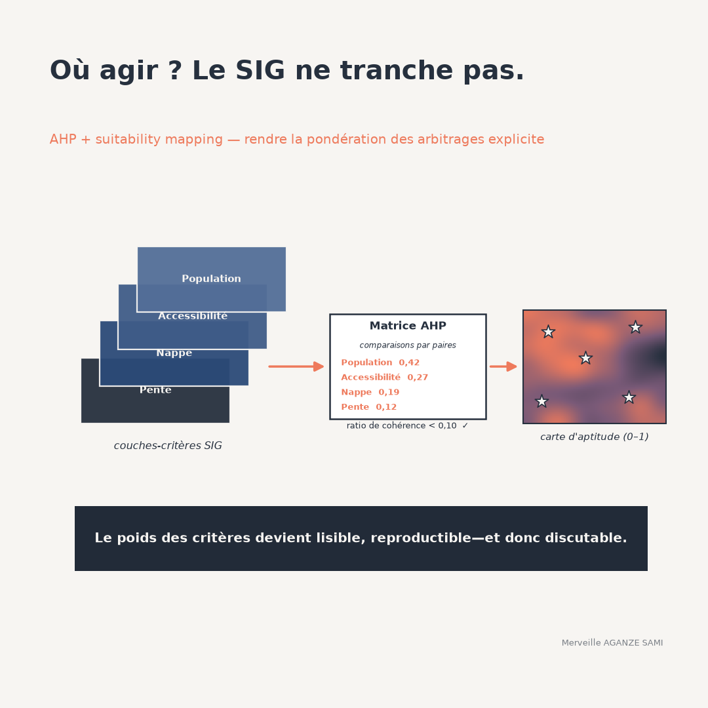

Deciding where to site infrastructure — water points, collection centres, reforestation plots — sets heterogeneous criteria against one another: population served, distance to existing facilities, subsurface characteristics, accessibility, terrain constraints. Each points to different locations.
Without an explicit method, the trade-off between these criteria happens implicitly, in the mind of whoever produces the map. The result may be sound, but it is neither traceable nor contestable. Spatial multicriteria analysis does not remove the element of judgement; it formalises it into a set of parameters that can be examined and challenged (Malczewski, 2006).
1. Structure before weighting
The first step organises the decision into a hierarchy: the objective at the top, criteria below, possibly broken into sub-criteria. This structuring has a practical consequence — it forces a distinction between what is a criterion to optimise and what is a constraint to respect.
Next comes an operation whose importance is frequently underestimated: bringing layers onto a common scale. A distance in kilometres, a slope in degrees and a density in inhabitants per square kilometre are not comparable as they stand. The function chosen to convert each quantity into a suitability score — linear, stepped, with a saturation threshold — determines a substantial part of the final result, as much as the weights do.
Pairwise comparison. Rather than assigning weights directly, the method elicits relative preference between each pair of criteria on a graded scale. Matrix processing derives a weight vector, and a consistency indicator flags contradictory judgements — preferring A to B, B to C, then C to A. A ratio below 0.10 is conventionally accepted (Saaty, 1977) (Saaty, 1980).
2. Implementation steps
- 1Define the objective and select criteria. A limited number, of the order of five to seven, keeps pairwise comparisons intelligible. Beyond that, the consistency of judgements degrades.
- 2Separate constraints from criteria. A protected area or an excessive slope is an exclusion, not a criterion to weight. These layers apply as a mask, before or after combination.
- 3Standardise the layers. Each criterion is converted into a suitability score through an explicit function, itself documented.
- 4Establish weights and check consistency. Comparisons are conducted with the people who own the decision, not by the analyst alone. The consistency ratio is reported.
- 5Combine and map. Weighted linear combination produces a score per pixel, whose classification into categories is a separate choice.
3. Compensatory combination or not
Weighted summation has a property worth making explicit: it is compensatory. A very low score on one criterion can be offset by high scores on the others, and the site will still appear favourable. Where such compensation is not acceptable — an unusable aquifer is not redeemed by good road access — the constraint must be treated as an exclusion, or a combination rule limiting compensation must be adopted.
This point deserves an explicit decision with those responsible. It determines whether the map identifies sites that are acceptable overall or sites acceptable on every dimension — two different questions.
4. Limitations and caveats
- Critiques of the weighting procedure. The method has been the subject of methodological debate, notably on the interpretation of the comparison scale and on the fact that adding or removing an option can change the ranking of the others (Dyer, 1990). These reservations do not invalidate its use in suitability mapping, but they caution against presenting the resulting weights as objective measurements.
- Sensitivity to weights. A moderate change in weights can appreciably shift the areas ranked most favourable. A sensitivity analysis — varying each weight and observing the stability of the ranking — should systematically accompany the map produced (Chen et al., 2010).
- Origin of the judgements. Weights reflect the preferences of those consulted. Weighting established by the technical team alone produces a technically coherent map lacking legitimacy with stakeholders. The composition of the judging group is part of the result.
- Quality of input layers. An imprecise or outdated layer propagates its error into the final score without leaving a trace. The date and source of each layer must accompany the map.
- Apparent precision. A continuous score between 0 and 1 suggests a fineness the data generally do not support. Presentation in a few classes, together with an uncertainty map, is more honest.
5. What makes the map defensible
The value of the exercise lies not in the map itself but in the documentation accompanying it: the list of criteria and the reason for their selection, the standardisation functions, the comparison matrix and consistency ratio, the composition of the group that provided the judgements, the combination rule, and the results of the sensitivity analysis (Malczewski & Rinner, 2015).
Together these allow a third party to reproduce the exercise, to contest a specific parameter, and to measure the effect of that contestation. This is what distinguishes decision support from cartographic justification.
Key points
- Multicriteria analysis does not remove the trade-off: it makes it explicit and verifiable
- Layer standardisation weighs as heavily on the result as the weights themselves
- The consistency ratio detects contradictory judgements, not mistaken ones
- Weighted summation is compensatory: non-negotiable criteria must be handled as exclusions
- Weight sensitivity analysis is part of the deliverable, not exploratory work
A geographic information system does not indicate where to act. It allows trade-offs to be stated in a form others can examine and discuss — which is precisely the condition for a shared decision.
References
- Chen, Y., Yu, J., & Khan, S. (2010). Spatial sensitivity analysis of multi-criteria weights in GIS-based land suitability evaluation. Environmental Modelling & Software, 25(12), 1582–1591. doi.org/10.1016/j.envsoft.2010.06.001
- Dyer, J. S. (1990). Remarks on the Analytic Hierarchy Process. Management Science, 36(3), 249–258. doi.org/10.1287/mnsc.36.3.249
- Malczewski, J. (2006). GIS-based multicriteria decision analysis: a survey of the literature. International Journal of Geographical Information Science, 20(7), 703–726. doi.org/10.1080/13658810600661508
- Malczewski, J., & Rinner, C. (2015). Multicriteria Decision Analysis in Geographic Information Science. Berlin: Springer.
- Saaty, T. L. (1977). A scaling method for priorities in hierarchical structures. Journal of Mathematical Psychology, 15(3), 234–281. doi.org/10.1016/0022-2496(77)90033-5
- Saaty, T. L. (1980). The Analytic Hierarchy Process. New York: McGraw-Hill.

Merveille Aganze Sami
MEL & Database Management Advisor. 9+ years of experience in monitoring & evaluation, GIS and digitalization with international organizations (GIZ, Enabel) in DR Congo.
A siting decision to ground in evidence?
Get in touch